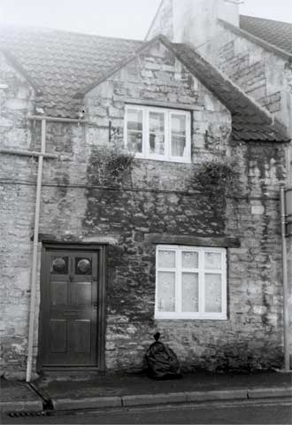

Type of building:
Mid mixed terrace house
Listing:
Grade ll
Plan and elevation:
Single pile, single unit, cross entry. 1 1/2 storeys. Plus two rear extensions.
Summary of the probable main building
history:
16th Century, remodelled in the late 17th Century. Extended in the 19th Century
and again in the mid 20th Century.

North elevation
Exterior:
Constructed of coursed rubble stone with a hammer dressed stone door surround,
which has a chamfered wood lintel. One modern three-light casement window is fitted
at ground level, probably in replacement of a shop front. The roof is pitched
and tiled with a coped dormer.
Interior:
The house in its present state, less extensions, is one-up, one-down. The north
wall is about 63cm thick; the south wall about 72cm thick but it bulks prominently
at the base (battered) and against which modern straight stairs have been positioned.
There is a cross entry with an ashlar wall running the length of the passage,
which may be a later replacement for a timber framed wall with some timber remaining
in situ. The door case is of chamfered wood with run-out stops. The former rear
door is now the entry into the extension. The first floor room (the former attic)
has evidence of an earlier roof structure of purlins butt jointed into principals
and an old roof angle of about 55%. The roof angle was subsequently altered to
allow construction of dormers (with extended collars) and to give headroom for
the construction of the stairway. The walls are now braced with a wood beam (at
a lower level than the original purlins) supported at one end by a stone corbel
in the chimney breast. The party wall at this level has wood studs and rails which
until recently contained remnants of woven wattles around wood staves (information
from the owner). The wall contains a blocked door. This party wall is out of line
with the party wall at the ground floor level.
The first of the two rear extensions incorporates the stone rubble built chimney stack and wall of an otherwise demolished earlier building(s), which appear to have no previous connection with the property. The rest of the extension is built of ashlar and cement block. The second extension is single storey of cement block construction and flat roofed.
Date & development:
The evidence suggests that the property was originally one with its neighbour
to the east and was single pile two-unit in plan. Wall thickness, earlier roof
structure, previous existence of wattle and daub at first floor and possibly ground
floor levels indicates probable 16th Century construction. The roof was probably
thatched, of which there is some evidence in straw remnants found by the owner
in the (previously sealed) roof space. The principal entry appears to be a later
opening, probably accomplished when the property was divided, so the existence
of any early through passage or cross entry has yet to be determined. (Similarly,
the position of the original stairway has yet to be identified but note the apparent
stair light in the north-east angle of the adjoining eastern neighbouring property).
The dormer gables and roof alterations were probably made in the late 17th Century
with extended collars in the Cotswold fashion. The first extension appears to
be of the 19th Century, of ashlar construction but embracing the remains of another
building(s) of uncertain age. The second extension is mid 20th Century.
References and bibliography
- Batheaston Society archives
Reference Pictures
Rear
view. Extension incorporating the stack of “another”
house |
BE
020 (right) and neighbour, originally built as one house |
Survey Drawings
| Ground
Plan |
Section |